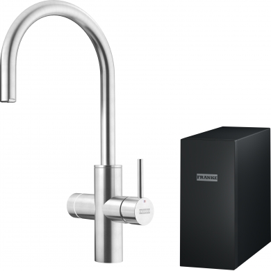

Kitchen Water Systems
Franke
Hersteller von Küchenlösungen und multifunktionalen Trinkwassersystemen.
Produkte in der Datenbank

Franke
Mythos Water Hub
Preis auf Anfrage
Varianten: All in One 6-in-1 und Sparkling 5-in-1Wasserarten: Kalt, warm, kochend, gekühlt, raumtemperiert und sprudelnd – variantenabhängigInstallation: Kompaktes Untertischsystem